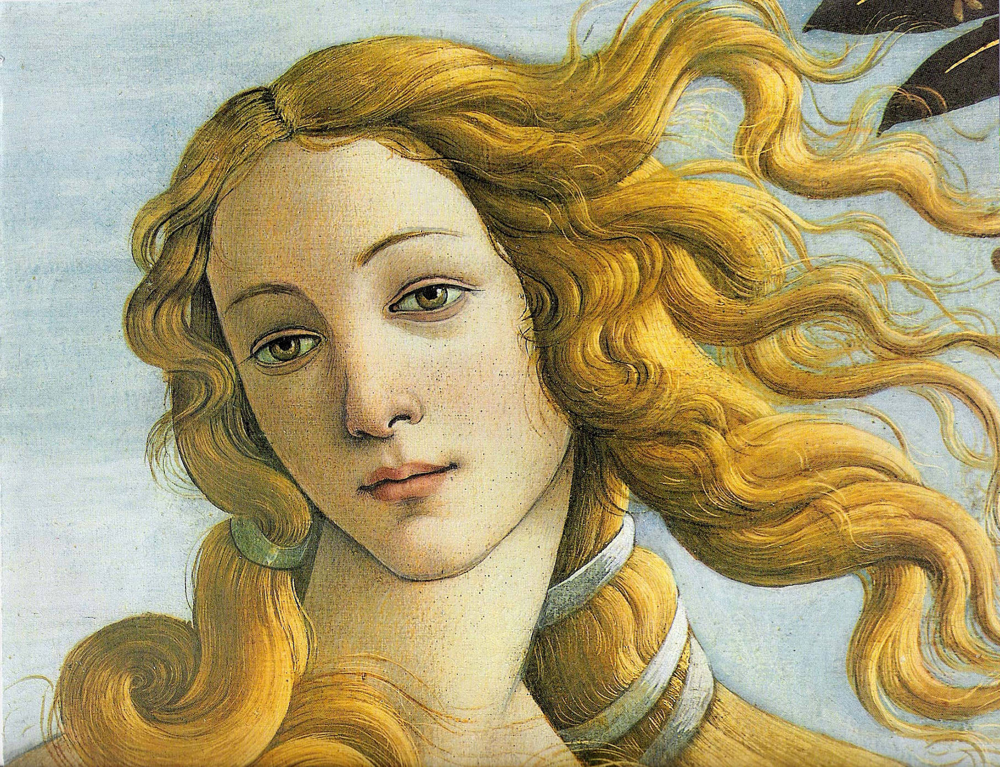

In Homer's Iliad, one of the Oceanids. In Hesiod's Theogony, however, Aphrodite is stated to have risen from sea foam, formed at the spot where Uranos' genitals landed, after Kronos castrated him and tossed them into the sea. Aphrodite's cult was centered on the islands of Cythera and Cyprus, both of which were claimed to be her birthplace. Her main festival was the Aphrodisia, which was celebrated annually every midsummer. The Charites (minor goddesses of grace and splendor) attended to Aphrodite and served as her handmaidens. Aphrodite's symbols include the dolphin, myrtle, rose, dove, sparrow, swan and pearl, and the dove, sparrow and swan were her sacred animals.